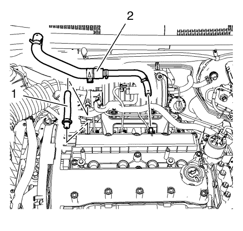

Descripción del sistema de ventilación de la carcasa del cigüeñal
Descripción general
Un sistema de ventilación del cigüeñal se usa para consumir vapores del cigüeñal en el proceso de combustión en vez de ventilar vapores a la atmósfera. Se suministra aire fresco del sistema de admisión al cigüeñal, mezclado con gases de paso y luego pasa por un orificio calibrado en el cuerpo de mariposa.
Funcionamiento

El control primario se hace por medio del orificio de ventilación positivo de la carcasa del cigüeñal (PCV) que mide el caudal a un ritmo que depende del vacío de entrada. El orificio de PCV es una parte integral de la cubierta del árbol de levas. Si no funciona con normalidad, el sistema está diseñado para permitir que las cantidades excesivas de gases de paso retornen a través de los tubos flexibles de ventilación (1 ,2) de la carcasa del cigüeñal al sistema de admisión para consumirse por la combustión normal.
Efecto de un funcionamiento incorrecto
| • | Un orificio obstruido puede causar las siguientes situaciones: |
| - | Se cala o velocidad lenta de ralentí |
| • | Un orificio con fugas puede causar las siguientes situaciones: |
| - | Velocidad de ralentí elevada |
| © Copyright Chevrolet. Reservados todos los derechos |